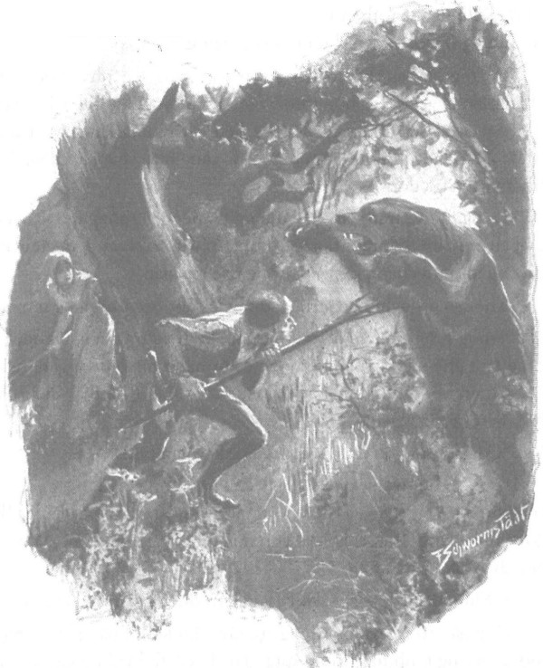

Như đã nói, Zbyszko sửa soạn vào rừng, bởi lẽ ông Maćko ngày càng cảm thấy khó chịu. Thoạt đầu, niềm sung sướng được trở về quê hương và được làm những việc nhà đầu tiên khiến ông đỡ đau chút ít, nhưng đến hôm thứ ba ông sốt trở lại, cơn đau bên sườn nhiều đến nỗi ông buộc phải nằm liệt một nơi. Hôm sau, Zbyszko đi xem xét chỗ dõ ong trước, chàng thấy cạnh đó có những vết chân rất to in trên bùn. Sau đó, chàng trò chuyện với người thợ ong Wawrek, kẻ thường ngủ đêm trong một túp lều cạnh đó cùng một đôi chó nòi thượng du rất dữ tợn, lúc này cũng đang sửa soạn trở về làng vì trời tiết thu đã bắt đầu se lạnh.
Hai người thu dọn, dắt chó, bôi một ít mật đây đó lên các thân cây để hấp dẫn gấu tới, rồi Zbyszko trở về nhà bắt đầu chuẩn bị cuộc săn. Để giữ ấm người, chàng mặc chiếc áo kubrak da hươu không tay, đội mũ chóp nhọn đan bằng dây thép để gấu không thể xé toạc da đầu. Sau đó chàng chọn một chiếc chĩa thật tốt, hai răng có ngạnh, và một chiếc rìu lưỡi rộng bản, cán bằng gỗ sồi không quá ngắn như cán rìu cánh thợ sơn tràng thường dùng. Vào lúc thú vật ra uống nước ban chiều, chàng đã có mặt ở đó, và sau khi lựa chọn vị trí phục kích thích hợp, chàng làm dấu thánh rồi ngồi đợi.
Ráng đỏ rực của vầng dương đang lặn vẫn chiếu sáng giữa những cành cây lá kim cổ thụ. Trên các ngọn thông, lũ quạ đánh nhau kêu quàng quạc, đập cánh tao tác. Đây đó, mấy con thỏ rừng chạy về phía vực nước làm xôn xao những nhành lá rủ thấp và những quả cây dại đang ngả màu vàng thâm. Thỉnh thoảng, một chú chồn tinh ranh nhanh nhẹn vụt qua chỗ cây sồi non. Trong lùm cây vẫn rộn tiếng chim, nhưng rồi cũng thưa thớt dần.
Hoàng hôn là lúc rừng không yên tĩnh. Cách Zbyszko không xa, một đàn lợn rừng ồn ào lộc xộc băng qua, rít lên hồng hộc, tiếp đó mấy con nai chạy thành một hàng dài, con nọ dúi đầu vào đuôi con kia. Cành khô gãy răng rắc và khu rừng vang động tiếng móng chúng, những tấm thân rực lên sắc đỏ trong ánh mặt trời kéo dần về hướng bãi lầy, nơi chúng sẽ được an toàn và yên ổn ngủ qua đêm. Rốt cuộc ráng chiều lan rộng, khiến những ngọn thông như cháy rực lên trong ánh lửa, rồi tất cả dần dần vắng lặng. Rừng bước vào giấc ngủ. Dậy từ mặt đất, bóng tối dâng dần lên cao về phía ráng chiều đang cháy sáng, mờ dần đi, sẫm dần lại rồi tắt hẳn.
“Bây giờ, khi lũ sói chưa cất tiếng tru, chắc rừng sẽ yên ắng lắm đây!” Zbyszko thầm nghĩ.
Chàng hơi tiếc đã không mang theo cánh nỏ, nếu mang chàng sẽ có thể hạ thêm một con lợn rừng hay con nai. Từ phía đầm lầy chợt vẳng lại những tiếng động gì đó trầm dục, nghe như tiếng nức nở não nề, lại như tiếng huýt gió. Zbyszko ngoảnh nhìn về phía ấy, lòng hơi lo sợ, bởi lẽ ngày trước gã tá điền Ragic sống trong một lều đất nơi đây đã biến mất như thể bị hút trọn ngay xuống đất cùng cả gia đình, mất tăm mất dạng. Một số người bảo chắc gã đã bị bọn cướp bắt đi, nhưng cũng có những kẻ nhận ra những dấu vết lạ lùng còn lưu lại trong lều, không phải vết người cũng chẳng ra vết thú, họ lắc đầu hồi lâu trước những dấu vết đó, không hiểu có nên mời đức cha ở Krześnia đến làm lễ trừ tà cho túp lều kia không. Song người ta không làm việc đó, bởi chẳng có ma nào muốn đến đấy ở. Túp lều - hay đúng hơn là lớp đất sét trát trên những bức vách ghép bằng cành khô - bị mưa rửa trôi dần, và kể từ đó nơi đây có tiếng không lành. Mỗi mình lão thợ ong Wawrek là chẳng hề để ý tới chuyện đó, vẫn thường ngủ đêm lại đây, nhưng người ta cũng đồn khối chuyện lạ lùng về cái lão Wawrek ấy. Có trong tay cả chĩa ba và lưỡi rìu, Zbyszko chẳng sợ gì thú dữ, nhưng lòng chàng vẫn phấp phỏng lo lo khi nghĩ đến các thứ thế lực hắc ám, và chàng lấy làm sung sướng khi rốt cuộc những tiếng động ấy lặng đi.
Những ánh sáng cuối cùng đã tắt, đêm buông màn đen kịt Gió đã lặng, không còn tiếng xào xạc thường nghe thấy trên những ngọn thông. Đôi khi những quả thông rụng rơi đây đó, gieo những thanh âm mạnh và sắc trên nền yên lặng mênh mông, còn nói chung bốn phía im phăng phắc, đến nỗi Zbyszko nghe rõ tiếng thở của chính mình.
Chàng ngồi yên như vậy suốt hồi lâu, đầu tiên còn nghĩ đến con gấu sắp lần tới. Rồi sau đó nghĩ tới nàng Danusia đã đi về vùng xa ngái ấy cùng cả đoàn người Mazowsze. Chàng nhớ đã bế nàng lên vào phút chia xa cùng quận chúa, nhớ những giọt lệ của nàng lăn dài trên má, nhớ khuôn mặt trắng mịn màng, mớ tóc vàng óng buông lơi, những vồng hoa thỉ xa cúc trên đầu, nhớ giọng hát của nàng và đôi hài đỏ mũi nhọn hoắt mà chàng đã hôn lúc đường rẽ về đôi ngả… Chàng hồi tưởng tất thảy những gì đã xảy ra từ lúc quen nhau, lòng chợt xót xa bởi thiếu nàng bên cạnh, và lúc ấy nỗi nhớ nhung hoàn toàn chế ngự lòng chàng, khiến chàng quên bẵng rằng mình đang ở giữa rừng sâu, đang phục chờ con thú. Chàng tự nhủ: “Ta sẽ đến với nàng, ta không thể sống thiếu nàng được!”
Chàng cảm thấy nhất định phải thế - chàng sẽ đi Mazowsze, nếu không sẽ phải đắm chìm mãi ở chốn Bogdaniec. Chàng nghĩ đến ông Jurand và sự khăng khăng lạ lùng của ông, chàng thấy vì thế lại càng cần đến đấy để tìm biết xem điều bí ẩn đó là gì, trở ngại đó thế nào, liệu một lời thách đấu quyết tử có thể gạt bỏ được trở ngại đó hay chăng. Rớt cuộc, chàng ngỡ như thấy Danusia đang chìa tay đón chàng mà kêu lên: “Đến đây, anh Zbyszko, đến đây đi anh!” Sao chàng có thể không đến với nàng cho được kia chứ!
Tuy không hề ngủ mê nhưng chàng vẫn thấy nàng rõ ràng, như thể nàng đang hiện ra trước mặt trong một giấc mơ. Này đây, Danusia đang bước cạnh quận chúa, gảy chiếc đàn luýt tí hon và khẽ hát cho bà nghe, trong khi lòng nàng đang nghĩ đến chàng, rằng chẳng bao lâu nữa sẽ được gặp chàng. Biết đâu nàng chẳng đang đưa mắt nhìn mãi ra xa xem có phải chàng đang phóng ngựa tới với nàng không. Ấy vậy mà chàng lại đang phải ngồi mãi nơi đây, giữa rừng sâu tăm tối…
Zbyszko chợt choàng tỉnh, không chỉ vì chợt nhớ tới khu rừng tăm tối, mà còn vì từ phía xa sau lưng chàng chợt vang lên một tiếng động khe khẽ.
Siết chặt hơn chiếc chĩa ba trong tay, chàng dỏng tai nghe ngóng.
Tiếng sột soạt tiến lại gần, lát sau đó nó đã trở nên rất rõ. Tiếng cành khô răng rắc, tiếng lá rụng và quả khô xào xạc dưới gót chân thận trọng của một kẻ nào đó… Một con vật nào đó đang bước.
Đôi lúc, tiếng sột soạt lại ngừng bặt, dường như con thú dừng lại bên các cây to, và những khi ấy bỗng yên lặng đến nỗi Zbyszko cảm thấy trong tai nghe rền tiếng chuông, để rồi tiếp đó những tiếng bước chân thận trọng lại chậm rãi nổi lên. Trong sự gần lại này có gì đó quá thận trọng, đến nỗi Zbyszko đâm ngạc nhiên.
“Chắc cụ gấu sợ mùi lũ chó sống trong lều gần đây,” chàng tự nhủ, “hay cũng có thể đấy là con sói đánh được hơi của mình cũng chưa chừng!”
Trong khi ấy, tiếng bước chân bặt hẳn. Song Zbyszko nghe rất rõ con vật ấy đã dừng lại cách chàng cùng lắm là hai, ba mươi bước phía sau lưng, hình như nó đang nằm phục xuống. Chàng cố ngoảnh nhìn một lần rồi hai lần, nhưng ngoài các thân cây to nổi hình đen kịt ra thì chẳng thể thấy được gì khác, nên chàng đành cắn răng chờ đợi.
Và chàng chờ rõ lâu, đến nỗi chàng chợt cảm thấy lạ.
“Không lẽ lũ gấu mò đến đây để nghỉ dưới đõ ong? Mà nếu là sói đã bắt được hơi ta thì hẳn nó cũng chẳng chờ đến sáng!”
Thốt nhiên, một cơn rùng mình chợt chạy từ gót lên đầu chàng.
Thế nếu như loài ma quái kia trườn khỏi vùng lầy, tập hậu từ phía sau lưng? Nếu những cánh tay trơn nhầy nhụa của con ma da chuyên kéo chân người xuống lầy chợt túm chặt lấy tay chàng, nếu đôi mắt xanh lét của ma trơi chợt nhìn thẳng vào mặt chàng, nếu tiếng cười eo éo ghê rợn vang lên ngay sát lưng chàng hoặc nếu từ sau cây thông chợt thò ra cái đầu tím ngắt đong đưa trên những chiếc chân nhện lênh khênh ma quái? Chàng cảm thấy tóc như dựng ngược cả lên dưới mũ che đầu bằng thép.
Nhưng lát sau, lại có tiếng sột soạt vang lên phía trước mặt chàng, lần này nghe rõ hơn trước. Zbyszko thở ra một hơi dài. Chàng vẫn nghĩ chắc đó là quái vật đang tiến lại, nhưng lần này từ phía trước. Thà thế còn hơn. Cầm thật chắc cán chiếc chĩa ba, chàng khẽ nhỏm lên, chờ đợi.
Đúng lúc ấy, trên đầu chàng chợt có tiếng lá thông reo xào xạc, mặt chàng cảm thấy một hơi gió thổi từ phía đầm lầy tới, và cùng lúc thoảng tới mũi chàng mùi hôi nồng nặc của gấu.
Không còn nghi ngờ gì nữa: đúng là một bác gấu đang mò tới!
Trong một thoáng, Zbyszko không kinh sợ nữa, mà cúi đầu cố căng tai nghe ngóng. Những bước chân nặng nề tiến lại gần, nghe rất rõ, mùi hôi càng nồng nặc, lát sau đã có thể nghe thấy tiếng thở hổn hển và tiếng gầm gừ khe khẽ.
“Cốt nó đừng đi thành đôi!” Zbyszko nghĩ bụng.
Chàng chợt trông thấy ngay trước mặt hình thù đồ sộ đen sẫm của con thú, nó đi phía đầu gió đến nên tới tận sát vẫn chưa bắt được hơi chàng, nhất là khi nó còn mải hít hít mùi mật ong đã được bôi khắp các thân cây.
- Xin chào cụ! - Zbyszko kêu lên, từ dưới cây thông vọt ra.
Con gấu rống lên một tiếng cụt lủn như kinh hoàng trước hiện tượng bất ngờ, nhưng nó đã quá gần để có thể trốn chạy. Vì vậy, trong chớp mắt, nó chồm đứng dậy trên hai chân sau, dang rộng hai chân trước như định vật nhau. Đó là điều Zbyszko chờ đợi. Chàng thu mình nhảy phắt tới nhanh như một tia chớp, dùng toàn bộ sức mạnh của đôi tay lực lưỡng cùng sức nặng toàn thân để thọc cái chĩa ba vào ngực con thú.

Zbyszko nhảy phắt tới, thọc cái chỉa ba vào ngực con gấu
Cả khu rừng vang động tiếng rống kinh hoàng. Con gấu đưa cả hai chân trước túm chặt chiếc chĩa ba chực rút ra, nhưng những ngạnh sắc trên mũi chĩa đã bám chặt vào thịt làm nó đau đớn quá, càng gầm rống kinh khủng hơn. Rồi muốn với tới vồ Zbyszko, nó tì cả người vào mũi chĩa, ấn mạnh khiến mũi chĩa càng thụt vào sâu hơn. Zbyszko không rõ mũi nhọn đã đâm đủ sâu vào người con vật hay chưa nên không dám buông tay. Người và thú bắt đầu giằng co, vật lộn. Khu rừng vang động tiếng gầm rống không dứt, trong đó toát lên cả nỗi điên giận lẫn niềm tuyệt vọng.
Zbyszko không thể rút rìu vung lên trước khi chống đầu cán chĩa được vót nhọn xuống đất, còn con gấu thì dùng hai chân túm chặt cán, cố giằng giật với Zbyszko, như thể nó hiểu chàng muốn gì. Mặc dù cán chĩa thép tì vào ngực khiến chàng đau đớn mỗi khi cử động, nhưng chàng không chịu để yên cho con gấu nhấc bổng mình lên. Cứ thế, cuộc chiến đấu kinh khủng ấy kéo dài, và Zbyszko hiểu rằng cuối cùng sức chàng sẽ kiệt, chàng rất có thể bị ngã, mà ngã thì chết chắc; vì vậy chàng dồn hết sức gồng căng đôi tay, giang rộng hai chân, cố cong vồng lên như cánh cung để khỏi bị xô ngã ngửa. Chàng rít lên qua hai hàm răng nghiến chặt:
- Hoặc mày chết, hoặc tao chết, này!..
Một cơn điên giận, một nỗi quyết tâm ghê gớm tràn dâng, chàng thà chịu chết ngay chứ nhất định không buông con thú. Nhưng chàng bị vấp chân vào một rễ cây, loạng choạng và hẳn sẽ ngã gục nếu đúng lúc ấy không có một bóng đen chợt hiện ra ngay cạnh chàng, một chiếc chĩa thứ hai đâm vào thân con thú, và một giọng nói chợt vang lên sát đầu chàng:
- Rìu!…
Trong cơn say máu chiến đấu, Zbyszko không nghĩ xem cứu tinh từ đâu bất ngờ đến vậy, mà chàng rút ngay rìu chém một nhát khủng khiếp. Hai chiếc chĩa gãy răng rắc dưới sức nặng của con thú đang trong cơn giãy chết. Cuối cùng, nó ngã vật xuống đất như bị sét đánh trúng, rên lên một tiếng khàn khàn, kinh hoảng. Nhưng tiếng kêu rên bặt ngay. Một bầu không khí im lặng bao trùm, chỉ nghe tiếng thở hổn hển rất to của Zbyszko, chàng đang tựa người vào gốc thông, chân tay run lẩy bẩy. Mãi sau, chàng ngẩng lên nhìn bóng người đang đứng bên cạnh, và chợt hoảng hồn khi nghĩ rất có thể đó không phải là người.
- Ai đấy? - Chàng lo sợ hỏi.
- Jagienka! - Giọng kim thanh nữ đáp lại.
Zbyszko nghẹn ngào vì bất ngờ, không dám tin vào tai mình. Nhưng nỗi ngờ vực của chàng chẳng kéo dài, bởi tiếng Jagienka lại vang lên:
- Để em đánh lửa…
Cùng lúc ấy có tiếng cây đánh lửa xiết đá xoèn xoẹt, những tia lửa bắn ra tung tóe, và trong ánh sáng lóe rồi tắt ngay của chúng, Zbyszkotrông thấy vầng trán trắng tinh khôi, hàng lông mày tối sẫm và đôi môi thiếu nữ đang chẩu ra thổi mạnh vào mớ bùi nhùi đã bén. Mãi đến lúc ấy chàng mới chợt nghĩ ra rằng vì chàng, cô gái ấy đã một thân một mình xông pha giữa rừng đêm, nếu không có mũi chĩa của cô chắc chàng đã nguy rồi. Và chàng chợt cảm thấy lòng trào dâng niềm biết ơn to lớn đối với cô, đến mức chẳng kịp nghĩ ngợi gì thêm, chàng ôm chặt người cô thắm thiết hôn vào hai má.
Mớ bùi nhùi và cây đánh lửa rơi xuống đất.
- Yên nào! Gì vậy, anh? - Cô gái thấp giọng hỏi lại, nhưng vẫn không né tránh, ngược lại, môi cô như tình cờ chạm vào môi Zbyszko.
Chàng buông cô ra, thốt lên:
- Cầu Chúa trả công cho em! Không biết anh sẽ gặp chuyện gì nếu không có em!
Jagienka quỳ trong bóng tối mò tìm cây đánh lửa và mớ bùi nhùi, cô biện bạch:
- Em lo cho anh quá, bởi ông lão Bezduch cũng mang chĩa và rìu vào rừng mà vẫn bị gấu xé xác. Lạy Chúa che chở, nhỡ anh có làm sao thì bác Maćko chết mất, mà không thế thì bác cũng đang sống dở chết dở rồi… Thế là em vớ lấy chĩa, đi ngay.
- Chính em nấp sau gốc thông đằng kia, phải không?
- Vâng, em đấy.
- Vậy mà anh cứ tưởng là ma.
- Em cũng sợ, ban đêm đi bên cạnh đầm lầy Ragikowo mà không có đèn đuốc hãi lắm.
- Thế sao em không lên tiếng?
- Em chỉ sợ anh đuổi về.
Nói đoạn, cô gái lại cố đánh lửa, rồi đặt mớ bùi nhùi đã bén vào đám lõi sợi lanh khô nỏ, chúng bắt lửa cháy bùng lên.
- Em chỉ mang mỗi hai nắm đóm thôi, - cô bảo, - anh kiếm ít cành khô nhanh lên, ta sẽ đốt một đống lửa.
Chỉ lát sau ngọn lửa vui vẻ cháy sáng, soi tỏ thân hình màu nâu to tướng của con gấu đang nằm trong vũng máu.
- Hey! Thật là một con to xác! - Zbyszko thốt lên, giọng pha chút tự hào.
- Trông kìa! Anh chém gần bửa đôi đầu nó còn gì! Ôi! Chúa ơi!
Cô gái vừa thốt lên vừa cúi xuống ấn ấn tay vào bộ lông con thú, xem nó có nhiều mỡ không, rồi cô ngước lên, mặt tươi cười:
- Sẽ đủ mỡ dùng ít nhất hai năm.
- Cái chĩa bị gãy vụn rồi, em xem này!
- Thế thì gay rồi, em biết ăn nói thế nào với cha đây?
- Sao vậy?
- Em chắc cha không cho em vào rừng, nên đợi đến khi cả nhà ngủ rồi em mới lẻn đi.
Lát sau, cô nói thêm:
- Anh đừng hở ra chuyện em vào đây nhé, kẻo cha lại quở.
- Nhưng anh phải đưa em về tận nhà, nếu không lũ sói sẽ tấn công em trong khi em không còn chĩa phòng thân.
- Vâng, thế cũng được.
Đôi trẻ trò chuyện như vậy bên ánh lửa bập bùng, cạnh xác con gấu, nom cả hai như những tiên đồng trẻ tuổi của cánh rừng.
Ngắm khuôn mặt duyên dáng của Jagienka được ánh lửa soi sáng, Zbyszko thốt lên trong nỗi ngạc nhiên bất chợt:
- Trên đời không thể có thiếu nữ thứ hai như em! Có lẽ em ra trận cũng được đấy!
Cô gái nhìn chăm chăm hồi lâu vào mắt chàng, rồi trả lời giọng gần như buồn bã:
- Em biết chứ… Nhưng xin anh chớ cười em!..